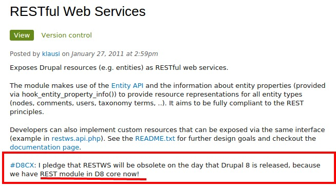

Chakrapani R
- From Bangalore, India
- Drupal architect at Azri Solutions
- Drupal since 2009
- Organizer of Drupal Camp Bangalore
Overview
- What is Headless Drupal
- State of Headless in Drupal
- Different options available in Drupal
- Why and When to use Headless
What is Headless Drupal ?
- Have you output xml or json from Drupsl?
- Yes ? You have already used Headless!
- It's a fancy term for Drupal as backend
- With your choice of front end
Custom Frontend ?
- Web App
- Mobile App
- Desktop App
- Any system that feeds on API provided by Drupal
Decoupling
- Decouples backend from front end
- Used by many other stacks
- It's been there from Drupal 6!
'Serving Pages' to 'Talking HTTP'
- Making the shift from "serving pages" to "talking HTTP"
- Drupal by default assumes that it only serves web pages
- This has to change for Drupal to be truly headless
Available options in Drupal
- Services
- RestWS
- Mean.IO
- Restful
Services
- By far the easiest to setup and use
- Widely used
- Views integration (views_services)
RestWS
- Leverages entity API
- Supports CRUD operations
- Will be part of Drupal 8

Mean.IO
- Provides integration with MEAN stack
Restful
- Endpoints are to be cusotm defined
Why Headless
- Clean APIs for mobile apps
- Independent upgrades
- Less reliance on Drupal specialists
- Create Once, Publish Everywhere
When to use Headless ?
- Front end team needs autonomy.
- Front end team has limited Drupal skills.
- Content is consumed by multiple devices.
- When data is coming from multiple sources.